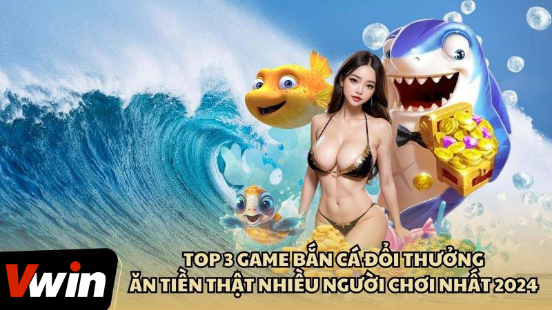

.png)
ĐÃ ĐĂNG TRÊN THÁNG BA 6, 2024 BỞI Vwin
Trò chơi bắn cá đổi thưởng ăn tiền thật trực tuyến đã trở thành lựa chọn giải trí hàng đầu cho nhiều người, mang lại cơ hội kiếm thêm thu nhập từ những phần thưởng giá trị. Với luật chơi đơn giản, người chơi chỉ cần tập trung vào việc săn cá, đặc biệt là những “Boss” lớn, để nhận được phần thưởng hấp dẫn.
Để thành công trong thế giới bắn cá đổi thưởng, người chơi cần trang bị cho mình những kinh nghiệm và chiến lược phù hợp. Hãy khám phá những tựa game bắn cá đổi thưởng phổ biến và áp dụng những mẹo chơi hiệu quả để luôn giành chiến thắng.
Phiên bản cải tiến của trò chơi săn cá cổ điển, nay đã trở thành một sân chơi hấp dẫn với cơ hội nhận thưởng bằng tiền thật, thu hút đông đảo người chơi. Với đồ họa tinh tế, chi tiết, trò chơi mô phỏng một thế giới đại dương đa dạng với nhiều loại cá, mang đến trải nghiệm thám hiểm dưới biển cả chân thực cho người chơi.
Bắn cá đổi thưởng ban đầu xuất hiện tại các siêu thị và trung tâm thương mại, với luật chơi dễ hiểu và hệ thống trả thưởng thuận lợi, nhanh chóng trở thành trò chơi được yêu thích rộng rãi. Nhiệm vụ của người chơi là hạ gục các chú cá trên màn hình để giành phần thưởng giá trị, mang lại niềm vui và cơ hội kiếm tiền cho mọi người.
Trong bối cảnh sự phát triển mạnh mẽ của ngành công nghiệp game, trò chơi bắn cá đổi thưởng đã nhanh chóng trở thành một xu hướng nổi bật trên thị trường. Dưới đây là ba trò chơi bắn cá đổi thưởng ăn tiền thật mới nhất hiện nay mà người chơi không nên bỏ lỡ:
Trò chơi bắn cá đổi thưởng ăn tiền thật trực tuyến đã trở thành lựa chọn giải trí hàng đầu
Game bắn cá đổi thưởng ăn tiền thật, mang tên Bắn Cá Phát Lộc, thu hút người chơi bằng giao diện đồ họa 3D chân thực và tinh tế, tái hiện một thế giới đại dương đầy màu sắc và sự sống động. Người chơi được đắm chìm trong không gian biển cả, nơi hệ sinh thái phong phú hiện lên sống động qua từng trận săn cá.
Hiện nay, nhà cung cấp trò chơi Bắn Cá Phát Lộc không chỉ tạo điều kiện để người chơi khám phá biển cả kỳ thú mà còn mang đến nhiều chương trình ưu đãi đặc biệt. Điển hình là việc tặng vốn miễn phí hàng ngày cho người chơi chỉ bằng cách đăng nhập vào hệ thống. Sự hào phóng này khiến Bắn Cá Phát Lộc trở thành trò chơi không chỉ giải trí mà còn là cơ hội tìm kiếm phần thưởng hấp dẫn, đáng để thử sức.
Bắn Cá Tiên nổi bật là tựa game đi đầu trong thể loại bắn cá đổi thưởng ăn tiền thật, đưa người chơi vào một thế giới săn cá đầy màu sắc và thách thức. Với sự đa dạng về phòng chơi, từ Ao Làng đến Đại Dương và Đại Gia, trò chơi phục vụ mọi sở thích và khả năng của người chơi. Dù lựa chọn tham gia phòng nào, trải nghiệm của người chơi luôn đầy hấp dẫn và đáng nhớ.
Tựa game này là kết quả của sự đầu tư công phu, với bối cảnh đa dạng, giao diện đồ họa sắc nét và chân thực, mang đến cho người chơi cảm giác như đang thực sự lặn sâu dưới đại dương để săn tìm và chinh phục những chú cá quý hiếm. Bắn Cá Tiên không chỉ là một trò chơi giải trí mà còn là cơ hội để kiếm thưởng thông qua sự kiên nhẫn và kỹ năng của mỗi người chơi.
Bắn cá đổi thẻ cào là lựa chọn tuyệt vời cho những ai mới bắt đầu khám phá thế giới game bắn cá đổi thưởng ăn tiền thật. Đặc trưng bởi sự đa dạng trong các phòng chơi cùng mức độ cược và thách thức khác nhau, trò chơi này mở ra không gian lựa chọn phong phú cho người chơi dựa trên kỹ năng và sở thích cá nhân.
Hiện nay, bắn cá đổi thẻ cào không chỉ nổi tiếng với cộng đồng game thủ mà còn thu hút một lượng lớn người tham gia, chứng minh cho sự yêu thích và hấp dẫn của trò chơi. Tham gia vào bắn cá đổi thẻ cào, người chơi không chỉ được thưởng thức những giây phút giải trí thú vị mà còn có cơ hội tận hưởng trải nghiệm đáng nhớ, mang lại cảm giác mới lạ và hứng khởi.
Top 3 game bắn cá đổi thưởng ăn số tiền thật hot nhất 2024
Khi tham gia vào trò chơi bắn cá đổi thưởng ăn tiền thật tại sảnh game Bắn cá Vwin, việc am hiểu luật chơi và áp dụng các chiến thuật thông minh là chìa khóa dẫn đến thành công. Dưới đây là một số kinh nghiệm từ các cao thủ giúp bạn luôn chiến thắng:
Theo dõi những kinh nghiệm trên, người chơi có thể tăng cơ hội chiến thắng của mình trong trò chơi bắn cá đổi thưởng ăn tiền thật. Hãy kiên nhẫn và áp dụng chiến thuật một cách thông minh để thu về phần thưởng hấp dẫn.
Trong thế giới của trò chơi bắn cá đổi thưởng ăn tiền thật, việc né tránh một số lỗi cơ bản không những giúp tối ưu hóa trải nghiệm mà còn nâng cao khả năng chiến thắng. Dưới đây là những điểm mà người chơi cần lưu ý để tránh phạm phải:
Kinh nghiệm bắn cá đổi thưởng ăn tiền thật bách phát bách thắng
Trò chơi bắn cá đổi thưởng ăn tiền thật với sức hấp dẫn không thể phủ nhận, đã được giới thiệu qua bài viết trên. Hy vọng rằng, người chơi sẽ tìm thấy niềm vui và hứng khởi trong các trò chơi này, đồng thời thu được những phần thưởng giá trị. Với đa dạng lựa chọn và cơ hội phong phú, mỗi người chơi có thể khám phá và chinh phục những thử thách mới, tận hưởng cảm giác thắng lợi và mang về cho mình những chiến lợi phẩm đáng giá.
Vwin được công nhận là nhà cái cá cược hợp pháp - an toàn. Vwin còn có trụ sở chính và cá cược trực tiếp tại Phú Quốc.